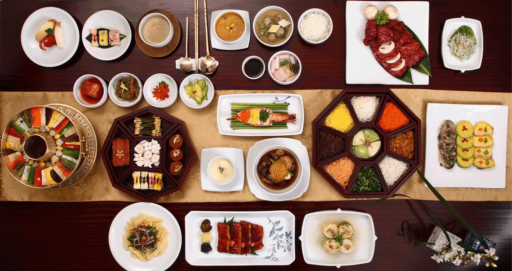

음식
한국 요리(韓國料理)는 한국에서 발달한 고유하고도 전통적인 음식을 뜻한다. 한국은 기후와 풍토가 농사에 적합하여 일찍이 신석기시대 후에 잡곡 농사로 농업이 시작되었고, 그 후 벼농사가 전파되었다. 이후 곡물은 한국 음식문화의 중심이 되었고, 삼국시대 후기부터 밥과 반찬으로 주식, 부식을 분리한 한국 고유의 일상식 형태가 형성되었다
한국인의 일상식은 밥을 주식으로 하고, 여러 가지 반찬을 곁들여 먹는 식사 형태이다. 주식은 쌀만으로 지은 쌀밥과 조, 보리, 콩, 팥 등의 잡곡을 섞어 지은 잡곡밥을 기본으로 한다. 부식은 국이나 찌개, 김치와 장류를 기본으로 하고, 육류, 어패류, 채소류, 해조류 등을 이용해서 반찬을 만들었다. 이렇게 밥과 반찬을 같이 먹는 식사 형태는 여러 가지 식품을 골고루 섭취함으로써 영양의 균형을 상호 보완시켜주는 합리적인 식사 형식이다. 주식으로는 밥, 죽, 국수, 만두, 떡국, 수제비 등이 있고, 부식으로는 국, 찌개, 구이, 전, 조림, 볶음, 편육, 나물, 생채, 젓갈, 포, 장아찌, 찜, 전골, 김치 등 가지수가 많다. 이러한 일상 음식 외에 떡, 한과, 엿, 화채, 차, 술 등의 음식도 다양하다. 또 저장 발효 식품인 장류, 젓갈, 김치 등이 다양하게 발달하였다.
대가족 중심의 가정에서는 어른을 중심으로 그릇과 밥상이 모두 1인용으로 발달해 왔다.
그러나 핵가족 중심으로 바뀐 지금은 온 가족이 함께 두레상에서 개인용 접시에 나누어 먹는 형식으로 되었다.
음식은 처음부터 상 위에 전부 차려져 나오는 공간 전개형을 원칙으로 하였다.
쟁첩에 담는 반찬 수에 따라 3첩, 5첩, 7첩, 9첩, 12첩 반상이라는 독특한 형식을 갖춘다.
한국인의 일상식은 밥과 반찬으로 구성되는 주 부식 분리형 양식이 삼국시대 이후로 하루 세끼 정규식사의 기본형으로 정착되어 왔다.
때로는 점심에 국수장국으로 차린 면상(麵床)이나 비빔밥, 장국밥과 같은 일품요리로 식사를 할 때가 있으나 이것은 하나의 별식(別食)차림이다.
밥상에서는 밥이 주격 음식이고, 반찬은 부격 음식이어서 반찬은 밥에 맞추어 선정된다.
반상차림은 식품의 배합, 간의 농담(濃淡), 음식의 냉온(冷溫), 색상의 배합 등 여러 면에서 합리성과 조합성을 이루고 있다.
반상차림에는 3첩, 5첩, 7첩, 9첩 반상이 있고, 조선시대 궁중에서는 왕에게 12첩반상을 차리었다.
가장 간단한 3첩반상은 국, 김치 외에 나물류와 생채, 조림이나 구이를 차린다.
간단한 3첩반상에서도 밥, 국, 김치, 장 외에 채소, 육류, 어류 등이 골고루 배합된다.
5첩반상에는 밥, 국, 김치, 장 외에 반찬 5가지, 찌개 한 가지가 오른다.
9첩반상에는 밥, 국, 김치, 장 외에 반찬 9가지, 찌개 한 가지, 찜 한 가지가 오른다.
